| 1時間でわかる甲状腺眼症入門パンフレット | |
| 鹿嶋 友敬 | |
| (2019) | |
我々の施設には、全国さまざまところから患者さんがいらっしゃいます。北は北海道から南は九州まで、日本全国さまざまなところから時間とお金をかけて治療を受けにいらっしゃいます。遠方からの患者さんが受診するたびに、どのような経緯で当院に来られたか伺うと、そもそも適切な治療を受けていない方が多いと感じます。内科ではバセドウの診断を受けているのに、甲状腺の数値が落ち着けば眼の症状は治るからと言われ、眼症は放置されている方もいれば、内科から眼症の治療目的に紹介受診した眼科では眼球突出が明らかにも関わらずやることはないと言われて放置された方もいらっしゃいます。また、眼球突出が残存しても内科や眼科のドクターからも「眼症なのだからあきらめなさい。そんなに気にならないよ」と言われて、そのまま治らないと思い込んだ方も多いです。
本書を世に出そうと思った理由は、このような誤解に基づく知識や常識が世の中に、それも患者さんたちだけでなく、眼科や内科の専門の医師たちの間にも広がっていると感じていたからです。このため、この本で書いた内容は最新の甲状腺眼症に関する情報を集めています。巻末にはヨーロッパの大きな研究グループがまとめた 2016 年時点の眼症の最新の診断・治療を記載した論文の日本語訳を載せてありますので、少し難しいですが興味を持たれ た方はぜひ一読してみてください。ひょっとしたら今まで思っていた常識とは異なるかもしれませんが、家具の隙間に落ちてしまったようになってしまっている患者さんたちができるだけ少なくなるような世の中になると良いなと願っています。
最後に、それぞれの項目の筆者は友人でもあり、それぞれの分野でトップ クラスのドクターにお願いしています。このような素晴らしい友人たちに恵まれたことを誇りに思います。
平成 30年7月5日
鹿嶋友敬
※掲載順、敬称略
■鹿嶋 友敬
オキュロフェイシャルクリニック東京 院長
カリフォルニア大学ロサンゼルス校国際フェロー
■河村 真美
新前橋かしま眼科形成外科クニリック 院長
■相川 美和
新前橋かしま眼科形成外科クニリック
■野口 三太朗
ツカザキ病院 眼科 医長
■若月 優
自治医科大学 放射線科 教授
■三村 真士
大阪医科大学 眼科 助教
カリフォルニア大学サンディエゴ校国際フェロー
■田邉 美香
九州大学 眼科 助教
■田邉 真紀人
福岡大学 内分泌糖尿病内科 講師
■後関 利明
北里大学 眼科 講師
カリフォルニア大学ロサンゼルス校国際フェロー
※掲載順、敬称略
■鹿嶋 友敬
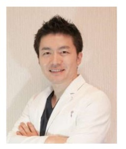
医師 医学博士
オキュロフェイシャルクリニック東京 院長
医療法人かしま眼科形成外科 理事長
群馬大学 眼科 非常勤講師帝京大学 眼科 非常勤講師
〈経歴〉
2002年 群馬大学医学部卒 群馬大学 眼科学教室
2007年 聖隷浜松病院 眼形成眼窩外科へ国内留学
2009年 群馬大学にて眼形成外来を開設
2012年 学位取得 同年群馬大学眼科 助教
2015〜16年 カリフォルニア大学ロサンゼルス校へ臨床留学
2017年 新前橋かしま眼科形成外科クリニック 開院
2018年 オキュロフェイシャルクリニック東京 開院
2010〜18年 アジア太平洋眼形成学会理事
2017〜18年 涙道涙液学会理事
〈コメント〉
私が専門としている眼形成眼窩外科は、これを行うことができる医師が全国的にも非常に少ない分野です。このため日本全国で治療が不可能であると諦めておられる方々が沢山いらっしゃいます。私は世界でも最高クラスにランクされるカリフォルニア大学ロサンゼルス校への臨床留学を経て、最新の治療を学び、さらに毎年4回程度の海外講演を経て、それをアップデートできるように努めています。現在、北海道から九州までさまざまなバセドウ病眼症の患者さんからご相談をいただき、治療を行っております。どんな小さな症状であっても、治すことができるかもしれません。治療に迷われている方々は、ぜひ一度ご相談ください。
■河村 真美
医師
新前橋かしま眼科形成外科クニリック 院長
〈経歴〉
2005年 香川大学医学部 卒業
2005年 甲南病院
2008年 神戸大学医学部付属病院
2009年 4月 兵庫県立こども病院
2009年10月 神戸海星病院
2010年 甲南病院 医長
2013年 新長田眼科病院 医長
2015年 よこやま眼科クリニック 副院長
2018年 新前橋かしま眼科形成外科クリニック 院長
〈学会等〉
日本眼科学会（専門医） 日本眼形成再建外科学会
日本抗加齢医学会（専門医）
〈コメント〉
眼科医が眼の周りの手術を行う眼形成という分野に魅力を感じ、この分野に飛び込みました。個々の症状に寄り添った治療法、また女性医師ならではの美容面に配慮した治療法も提案できるよう、最新の知識をアップデートしています。甲状腺眼症により顔貌の変化が起こったまま治療法が提案されずに悩んでいる患者様がたくさんいます。この本がそのような患者様の治療の一助となれば幸いです。
■相川 美和
医師
〈経歴〉
2002年 日本大学医学部卒 日本大学皮膚科学教室
2010年 駿河台日本大学病医院皮膚科腫瘍外来 レーザー外来
2016年 湘南メディカル記念病院 皮膚科 美容皮膚科
2017年 新前橋かしま眼科形成外科クリニック
〈コメント〉
新前橋かしま眼科形成外科クリニックには、毎日沢山の甲状腺眼症の方が来院されます。いかに多くの方が眼症について様々な悩みを抱えていらっしゃるかということを思い知らされる日々です。眼は視覚という大切な機能を持っているわけですが、同時に人の顔の中で最もその人の印象を決定づける部位でもあります。甲状腺眼症の約80%は女性でありながら、その治療についてはあまり知られておらず、発症してから早い段階での治療の機会を逃している方もいらっしゃるわけです。この本によって甲状腺眼症の方々が正しい知識と治療の選択肢を得て、より人生が明るく素晴らしいものになれば、と心から願っています。
■野口 三太朗
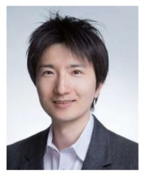
医師 眼科専門医
三栄会ツカザキ病院 医長
〈経歴〉
2006年 東北大学医学部 卒業
2006年 いわき市立磐城共立病院
2008年 東北大学病院眼科
2010年 石巻赤十字病院眼科
2014年 三栄会 ツカザキ病院眼科 医長
〈コメント〉
世界基準の医療を患者様に提供することを心がけ、国際学会などもできるだけ参加し、常にアップデートするようにしております。国によって医療水準の差が大きくあることは周知の事実ですが、先進国の日本国内においても施設により医療技術、水準は大きく異なります。私の使命は、可能な限り世界水準の医療を日本中に広め浸透させること、高水準の医療を遂行することです。
■若月 優
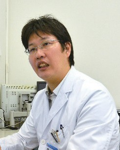
医師 医学博士
自治医科大学 放射線科／中央放射線部 教授
〈経歴〉
■学歴
2002年 3月 群馬大学医学部医学科卒業
2007年12月 群馬大学医学系研究科大学院
（医学博士）修了
■職歴
2002年5月 群馬大学医学部付属病院 研修医
2003年4月 国立高崎病院 研修医
2004年4月 放射線医学総合研究所 レジデント
2005年4月 虎の門病院
2006年4月 群馬大学医学部付属病院
2007年4月 伊勢崎市民病院
2008年4月 群馬大学医学部付属病院 助教
2009年9月 米国ハーバード大学/マサチューセッツ総合病院博士研究員
2011年5月 放射線医学総合研究所 重粒子医科学センター病院 医員
2013年7月 同 治療課医長
2016年4月 自治医科大学 放射線科／中央放射線部 教授
〈学会等〉
日本医学放射線学会 放射線治療専門医日本医学放射線学会 研修指導者
がん治療認定医
日本放射線腫瘍学会 代議員
日本放射線腫瘍学会小線源治療部会 幹事日本婦人科腫瘍学会 代議員
日本放射線科専門医会 特任理事
IAEA/RCA国内対応委員会 委員
アジア原子力協力フォーラム（FNCA）プロジェクト放射線治療運営グループ 委員
■三村 真士
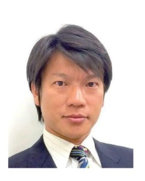
医師 医学博士
大阪医科大学 眼科学教室 助教
〈経歴〉
2002年 大阪医科大学卒 同大学 眼科学教室入局
2005年 大阪市立総合医療センター
2007年 大阪回生病院 （2009年〜 医長）
2014年 大阪医科大学 眼科学教室 助教
2015〜2017年 カリフォルニア大学サンディエゴ校
Shiley Eye Institute 眼形成再建外科 臨床留学
2017年 学位取得
2017〜2018年 涙道涙液学会理事
〈コメント〉
私が眼科医を志すきっかけとなった眼形成再建外科分野において、最善の治療方法を模索し実践しています。医療の世界は常に変化していますので、疾患への様々なアプローチ方法について世界中から情報を集め、可能であればそれらを自分の目で確かめ、さらには自分で新しい方法を考案して、できるだけ良いものを患者さんに提供できればと考えています。この本がバセドウ病で苦しまれている患者さんの参考になればと思います。
■田邉 美香
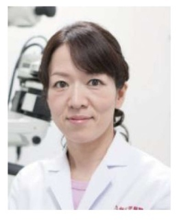
医師
九州大学 眼科 助教
〈経歴〉
2003年 長崎大学 医学部卒業九州大学 眼科入局九州大学病院 研修医
2005年 福岡市立こども病院 眼科 レジデント
2007年 九州大学病院 眼科 医員
2008年 国立小倉医療センター 眼科 医員
2009年 九州厚生年金病院 眼科 医長
2010年 聖隷浜松病院 眼形成眼窩外科（国内留学）
2011年 九州大学病院 眼科 医員
2016年 九州大学病院 眼科 助教
〈学会等〉
日本眼科学会（専門医） 日本眼腫瘍学会
日本眼形成再建外科学会
〈コメント〉
この本に掲載されている治療は、全て九州大学病院で行うことができます。ただし、当院では保険診療のみ、機能的に障害があると考えられる患者様が主に対象となります。
甲状腺眼症のステロイド全身投与は、視神経障害、外眼筋腫大に最も有効で、斜視には一部有効、眼球突出にはあまり効果がないとされています。非活動期には手術が必要になることがあります。甲状腺眼症の患者様の多くは、病勢が落ち着くのに1〜3年かかることが多いです。同じ甲状腺眼症でも症状は個人差がありますので、個人の体験談などにあまり振り回されずに、主治医と相談しながら、焦らず病気を治療していきましょう。
■田邉 真紀人
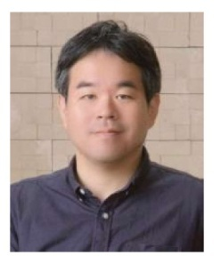
医師 医学博士
福岡大学病院 内分泌・糖尿病内科 講師
〈経歴〉
1998年 九州大学医学部卒業 九州大学第三内科入局
1998年 九州大学医学部附属病院
1999年 国立病院九州医療センター
2000年 九州大学大学院医学系学府（病態制御内科学）
2002年 同 中途退学
2002年 国立小倉病院（現・国立病院機構小倉医療センター）内科
2009年 同 内科医長
2013年 福岡大学病院 内分泌・糖尿病内科 助教
2016年 同 講師 現在に至る
〈学会等〉
日本内科学会（認定医・専門医・指導医）
日本内分泌学会（専門医・指導医・九州支部評議員） 日本糖尿病学会（専門医）
日本肥満学会（専門医）
日本ステロイドホルモン学会（事務局長）
■後関 利明
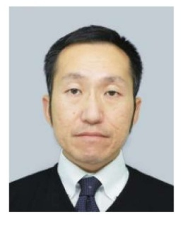
医師 医学博士
北里大学医学部眼科 講師
〈経歴〉
2001年 北里大学医学部卒業、眼科学教室入局
2007年 北里大学医療系研究科大学院卒業
医学博士取得
2013年 北里大学メディカルセンター 眼科科長
2014年 北里大学医学部眼科 講師（現職： 2018年8月現在）
2015年 第27回 日本神経眼科学会学術賞受賞2015〜2016 年 Jules Stein Eye Institute, UCLA, Visiting physician
2017年 北里大学病院眼科 外来主任
2018年 Jules Stein Eye Institute, UCLA, International fellow
（現職： 2018年8月現在）
2018年 第38回 日本弱視斜視学会学会賞 廣石賞受賞
〈学会等〉
日本眼科学会： 専門医、専門医指導医
日本神経眼科学会： 事務局長、編集委員、評議員、上級神経眼科相談医日本眼薬理学会： 評議員
日本自律神経学会： 評議員
日本ボツリヌス治療学会： 代議員
〈コメント〉
神経眼科、斜視、小児眼科が専門です。専門家が少ない分野です。できるだけ多くの患者様に世界基準の医療を提供できるように、努力しています。
目次
鹿嶋友敬
甲状腺眼症とは、「甲状腺眼症（Graves' ophthalmopathy; GO）はバセドウ病や稀に橋本病に伴ってみられる眼瞼や涙腺、球後軟部組織の外眼筋や脂肪組織の自己免疫性炎症性疾患である」（2007「バセドウ病悪 性眼球突出症の診断基準と治療指針」作成委員会）と定義される病気です。眼窩 （眼球の周囲の組織）の脂肪が増えることで眼球突出が起こります。眼球突出すると目つきが大きく変化します。眼球突出による目つきの変化は、印象が悪くなる方向に働くことがほとんどで、目つきがきつくなったように感じられます。眼球突出によりまぶたの脂肪も圧迫されるため、上のまぶたが腫れているように感じることや、下のまぶたにクマがあるように感じることもあります。
目つきが変化すると、人の目が気になってしまい鬱状態になって外出ができなくなってしまう方もいます。さらに眼球突出があると目が大きくなるため、目を閉じることができない状態（兎眼）になり乾き目（ドライアイ）になります。まぶたの筋肉の腫れがあると、まぶたが引っ張られる状態（眼瞼後退）になり、さらに目が大きくなります。眼を動かす筋肉（外眼筋）が腫れると、筋肉が伸びたり縮んだりできなくなり物がダブって見える（複視）ようになります。また、重度な筋肉の腫れが起こると視神経を圧迫し、視力障害をきたす（視神経症）ことがあります。眼球突出やドライアイにより、眼とまぶたの関連性が変化し、なみだ目の症状（流涙症）が出る方もいますし、まぶたが引っ張られることで逆さまつ毛（睫毛内反）になる方もいます。
このように甲状腺眼症という病気は、たった一つの病気ですが、これがいくつもの症状となって現れてしまうのです。
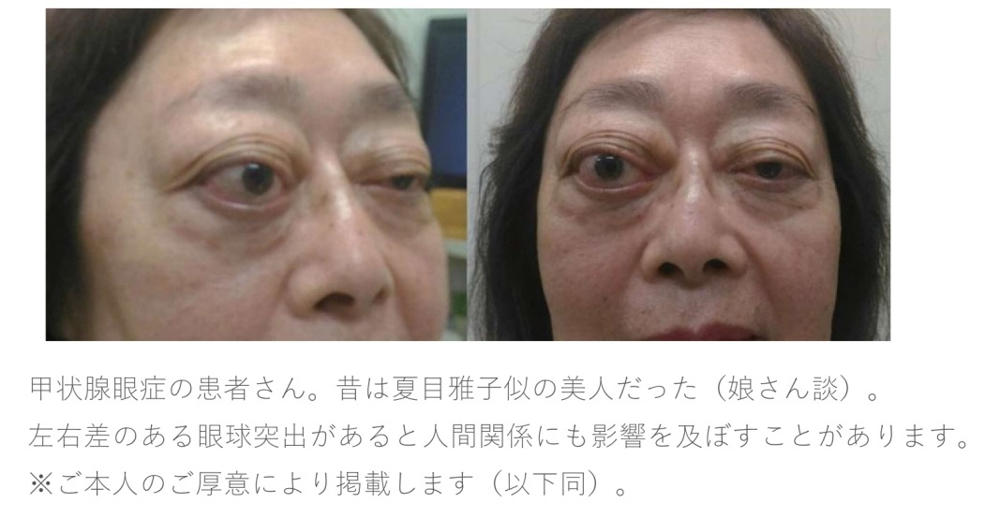
鹿嶋友敬
甲状腺眼症は風邪などの放置しておいても自然治癒するような病気と違って、症状のピークから少し良くはなりますが、元には戻らないまま固定化して眼球突出や複視などの後遺症を残します。それがこの病気の特徴です。
甲状腺眼症の経過は活動期と非活動期に分類されます。活動期は脂肪・筋肉・涙腺など眼窩の組織が腫れあがり、炎症が起こります。大部分の方の症状のピークは発症後半年です。その後炎症が徐々に消退し、1〜2年程度で非活動期に入ります。これらの経過はランドルズカーブ（Rundle's Curve）と言われるもので表されています。
発症後、症状のピークに向かっている最中に副腎皮質ステロイド剤の投与や放射線治療を行うと、そのピークを抑えることができるため、結 果的に後遺症を減らすことができるとされています。ピーク前に眼症の治療を開始するためには、症状が比較的軽度のうちに治療を開始しておいた方が良い、むしろそうしなければならない、という事実が判断の難 しいところです。
活動性評価指標のClinical Activity Score では活動性がある状態というのは球後痛、上下視時痛、眼瞼発赤、結膜充血、目頭の腫れ、眼瞼浮腫、 結膜浮腫のうち、3つ以上が当てはまる場合であるとされています。経験則ですが、日本人で3つ以上というのはかなり炎症が悪化している状態であり、日常生活に重度の支障が出ているケースであると思います。
このために日本人ではこの指標にとらわれずに、軽症のうちから治療をスタートすると良いと思われます。
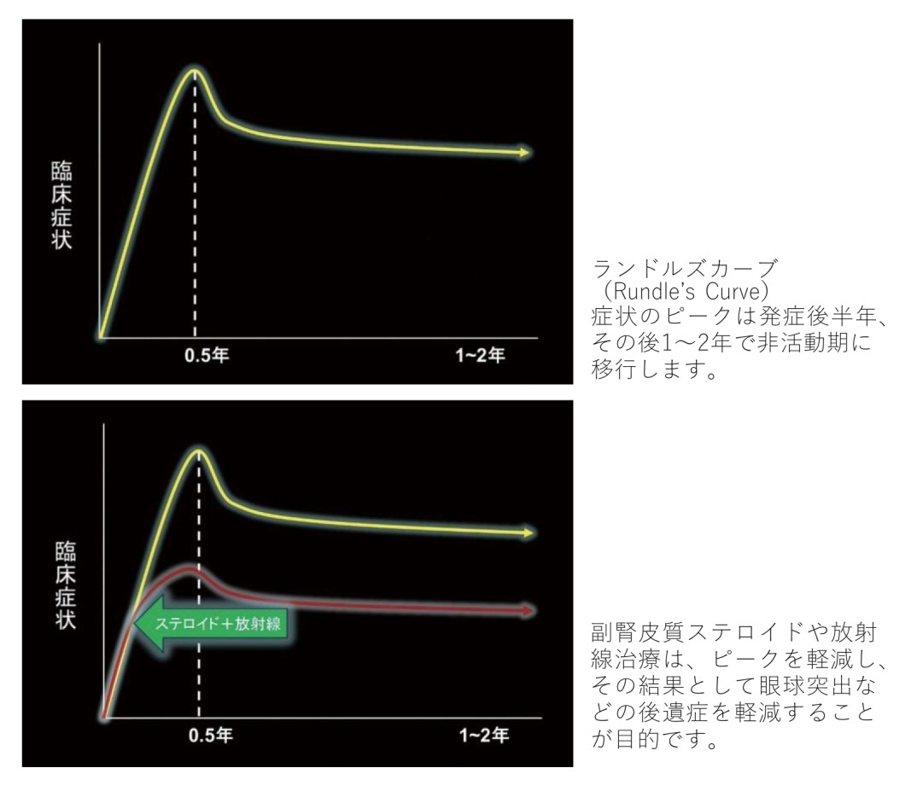
河村真美
甲状腺に関係した抗体が眼球の周りにある脂肪や眼球を動かす筋肉の中に存在し、それが標的となって炎症が起こります。炎症が起こると目の周りの脂肪や筋肉が腫れ、様々な症状が起きます。眼の奥の痛みや物を見るときの違和感、まぶた（眼瞼）の腫れや赤み、白目（結膜）の充血が見られ、目のつりあがり（眼瞼後退）により目つきが鋭くきつくなります。目の奥の脂肪や筋肉の 体積が増大し眼球が前に押し出され、眼球突出が起こります。眼球突出 や眼瞼後退により逆さまつ毛が起き、また瞬きが十分行えず目が閉じられなくなる（兎眼）と、黒目（角膜）に傷ができます。それによって異物感を感じたり、なみだ目になったりします。目を動かす筋肉が腫れ、動 きが悪くなり複視（ものが二重に見えること）が起こります。また、腫れあがった筋肉により視神経が圧迫されると視力低下が起こります。
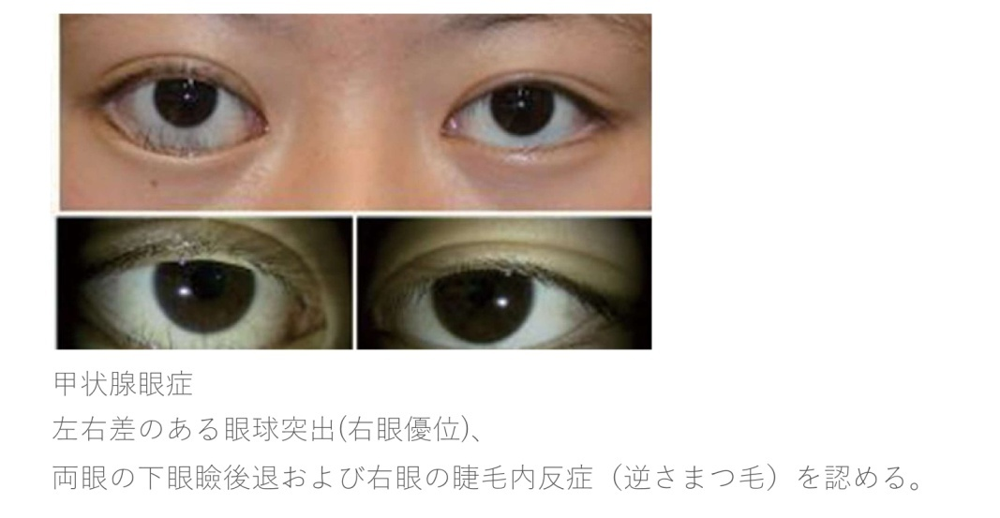
甲状腺眼症は両側性に発症しますが、左右差がある場合や、片側性のこともあります。バセドウ病の方の約50〜60％ に甲状腺眼症が生じます。甲状腺眼症は甲状腺機能亢進症が原因と考えられていましたが、低下症でも正常でも起こります。また、橋本病などでも発症するということを留意していただく必要があります。甲状腺眼症は全身症状に先立って出ることもあれば、甲状腺機能が落ち着いても発症することがあります。
相川美和
甲状腺眼症は約1000人に1人の割合で発症し、発症時の平均年齢はだいたい40歳と言われています。但し、これはあくまで平均年齢であって、実際は子供からお年寄りまでどんな年代の人にも起こり得ます。
当院の患者さんでも下は2歳から上は90歳近くまで眼症を発症しています。40歳以下の患者さんでは眼窩の脂肪が増えて眼球突出をきたす人が多く、斜視や視神経症になる方はほとんどいません。一方で60歳以降になると、外眼筋が腫れて斜視や視神経症になる人が多く、単純な眼球突出という方はほとんどいないといったように、発症年齢によって甲状腺眼症の症状も異なってきます。
眼症の男女比は1： 4で圧倒的に女性が多いのですが、男性は女性よりも発症年齢がやや高かったり、より重症であったりする傾向があります。そしてタバコを吸っているとより重症化しやすく、再燃しやすいことが証明されているので、喫煙されている方は今すぐ禁煙することをお勧めいたします。
その他に食べ物や習慣で、バセドウ病眼症と関連が証明されているものはありません。
相川美和
甲状腺眼症のときに行う主な検査を挙げておきます。
① MRI（磁気共鳴画像）
画像検査の１つで、強力な磁石でできた筒の中に人が横になって入り、撮影します。撮影時間は20分から30分程度で、眼窩とその周りの組織を輪切りにして見ることができます。眼の周りの筋肉の炎症や肥厚の程度を見ることができるため、活動性の評価に使用します。一方で脂肪の増生や炎症の程度については、MRIでもある程度の状態しか評価することはできません。
② 血液検査
甲状腺ホルモンの数値、バセドウ病や甲状腺眼症の原因である自己抗体の数値を調べます。また、バセドウ病以外の甲状腺疾患で高値となる自己抗体について調べ、眼症の治療に役立てます。手術を行う場合には、局所麻酔や全身麻酔での手術を受けられる状態であるかどうかの判定を行います。その時に肝炎ウイルスや梅毒など感染症の検査も行われます。
③ 視力検査
甲状腺眼症では、圧迫性視神経症により視力低下が起こることがあるため視力を計測します。また、逆さまつ毛やドライアイでも視力低下を生じることがあります。
④ ヘス赤緑試験
両方の眼球の動きが正常かどうかを調べる検査です。眼球は左右で同じような動きをするのが正常の状態ですが、甲状腺眼症では外眼筋の腫れや炎症のせいでその動きに問題が生じ、眼の向きがおかしくなったり（斜視）、眼の動きに制限がでたりすることがあるためにこの検査を行います。赤緑眼鏡をかけて器械の上に顎をのせて検査します。眼球運動障害の方向や程度を見ることができます。
⑤ 両眼単一視野
両眼で物を見たとき、上下左右の視野のどの範囲で物が１つに見えるのか、あるいはダブって見えるのかを調べる検査です。患者さんの症状にもっとも近い検査になります。
⑥ 眼球突出度計測
ヘルテル眼球突出計という道具を用いて、眼のすぐ外側の骨の縁からの眼球の突出具合を左右別々に測ります。日本人の平均は約14〜15mmで、上限は18mmです。ただし甲状腺眼症発症前の突出度の数値は不明であり、例えばもともとの数値が10mmであった可能性もありますので、この数値が正常値内であったとしても眼球突出が起きたと判断することがあります。この検査のデメリットは押し当てる強さで簡単に数値が変わってしまう、精密ではない検査であるということです。このため、この数値は参考程度に思っていただく方が良いと思います。
⑦ 細隙灯顕微鏡検査・眼底検査
眼科では眼球の内部を診察するために、この2つの検査を行います。甲状腺眼症では眼表面が傷ついてしまうことが多いので、蛍光色素を使って診察することもあります。主に細隙灯顕微鏡では眼球の前半を、眼底検査では眼球の後半を診察します。様々な病気で眼底に異常が起こりますので大切な検査です。例えば、視力が低下している方がいた場合、その原因が甲状腺眼症の視神経症で起こっているのか、あるいは別の病気なのかを見分けるためにも必要な検査です。
野口三太朗
甲状腺眼症を悪化させる生活習慣として、喫煙が挙げられ、これが最も大きな甲状腺眼症の重症化の因子です。甲状腺眼症の内科的治療の中に、ステロイド点滴、内服治療や患部に放射線をあてる放射線治療がありますが、このような内科的治療効果を大きく落とし、甲状腺眼症の炎 症を抑える消炎効果が得られにくくなります。
甲状腺眼症の重症化、悪化は喫煙本数に比例します。タバコの本数が多いほど甲状腺眼症はひどくなることになります。ですので甲状腺眼症の患者さんは喫煙は絶対にダメということになります。
また、他述していますとおり、甲状腺機能異常と甲状腺眼症は非常に密接です。甲状腺機能異常のある患者さんは甲状腺眼症の予備軍である可能性が高いです。ですので、甲状腺機能異常と診断された方は、将来の甲状腺眼症の発症を考慮し、必ず禁煙をしなくてはいけません。
甲状腺機能異常、甲状腺眼症の悪化の原因としてストレスも挙げられます。転職、結婚、離婚、子供の行事、家族の死亡、職場環境などによるものです。特に、甲状腺ホルモンが正常となるまでは、睡眠などを十分にとり、余裕を持った生活を送ることが大事です。少し早めの行動や、負荷をかけた運動を控える、家事などの仕事量を減らす、また、精神的ストレスをため込まないようにすることも重要とされています。物事のとらえ方、身のこなしが重要と思われます。
タバコもストレスも様々なメカニズムで甲状腺眼症を悪化させるものと思われますが、一つとしてこれらは体中の血管を収縮させ、血液の循環を悪化させることが知られています。同様に眼の血液循環も悪化させていると考えられます。血液の流れが悪くなると、甲状腺眼症などによって発生している炎症性物質を眼の奥に長時間とどめておくことになります。そのために、甲状腺眼症が悪化してしまうと考えられています。
糖尿病も全身の血液の流れを悪くする病気です。また、糖尿病自体が全身に慢性の炎症をもたらします。同様の理由により、甲状腺眼症を悪化させる要因となります。加えて、糖尿病の患者さんは体内のインスリンという血糖値を下げるホルモンの分泌機能が悪く、血糖値が上昇しやすい傾向にあります。甲状腺眼症の治療の際に、ステロイドを用いますが、非常に重要な治療薬です。このステロイドの副作用として血糖値の上昇があります。特に糖尿病の方は重度に上昇しやすいため、ステロイドが使用しにくくなります。
また、糖尿病の合併症に糖尿病網膜症という病気もあります。網膜症の進行により、失明に至るまでの病気です。甲状腺眼症の治療に放射線治療を行いますが、放射線治療が網膜症を悪化させることがあります。ですので、糖尿病が重度の方、網膜症のある方に放射線療法は行いにくくなります。糖尿病にならないような、糖尿病を進行させないような生活習慣を心がけることが大事です。
河村真美
活動期の治療はステロイドの投与と放射線治療です。
ステロイドは体内で作られるホルモンの一種で、多用な作用を持っています。免疫、炎症を抑える作用があり、自己免疫性疾患や炎症疾患に対する有効な薬剤として広く使用されています。活動期にステロイドの大量点滴療法（パルス療法）と放射線治療を併用することで、炎症を鎮静化させ、甲状腺眼症の活動性を抑えることができます。
「バセドウ病悪性眼球突出症（甲状腺眼症）の診断基準と治療指針」によると、ステロイドパルス療法と放射線治療の併用の有効率は88%と、それぞれの単独療法の有効率よりも高いです。そのため併用療法が望ましいですが、ステロイドの全身投与が行えない症例に対しては放射線治療単独でも効果はあるとの報告もあります。しかし、放射線治療による炎症が甲状腺眼症を悪化させるリスクがあるので、ステロイド投与下での治療をお勧めします。放射線治療の適応は35歳以上で、放射線を数回（通常10回。 〈12〉 参照）に分けて照射します。また、眼瞼腫脹（まぶたの腫れ）や眼瞼後退、眼球を動かす筋肉の腫れに対してステロイドの局所注射を行います。
活動期の治療の目的は、甲状腺眼症がどの程度まで悪化するかが予測できないため、これ以上の悪化を避けることです。すでに慢性化した眼症にはあまり効果がなく、また、どの程度効果があるかは個人差があります。
非活動期になり、残った眼症状に対しては手術を行います。眼球突出に対しては眼窩減圧術を行います。眼窩減圧術とは目の周りの脂肪や骨を切除し、増えた体積を減らす手術です。眼瞼後退や睫毛内反症（逆さまつ毛）に対しては眼瞼手術を行います。複視に対しては、眼を動かす筋肉の位置を移動させて目の位置を調整する、斜視手術を行います。
鹿嶋友敬
いえ、良くありません。まず知っておいていただきたいことは、甲状腺疾患と甲状腺眼症の治療はまったく別のものであるということです。どちらも並行して治療を行う必要があります。
先述（ 〈2〉 参照）の通り、甲状腺眼症には活動期と非活動期に分けられます。活動期の眼症に十分な治療が行われなければ、そのまま非活動期に移行し、症状は固定化してしまいます。つまり眼球突出や複視、なみだ目などの症状が後遺症となって残ってしまいます。バセドウ病などの甲状腺疾患の治療開始直後は、時間的にも金銭的にもご自身の体調的にも辛い時期であると思いますが、内科の通院に加えて甲状腺眼症に対する治療として、副腎皮質ステロイド治療の併用をお勧めいたします。
これは私の経験ですが、眼科医も内科医も甲状腺ホルモンの数値が安定すれば眼症は治ると勘違いされている場合があるようです。ホルモン値が安定すれば眼症は治ると言われ、それを信じて10年待ったけど結局治らなかったので、我々のクリニックを受診する方々がおられます。甲状腺疾患と眼症の治療は別々に行う、ということを忘れないでください。
相川美和
眼症の活動性を評価するのには、画像検査の1つであるMRI（磁気共鳴画像）が最もよく使われます。
活動期には脂肪、筋肉、涙腺などの眼窩の組織が炎症を起こし腫れ上がるのですが、特に外眼筋が炎症を起こし腫れている場合はMRIで診断ができます。MRIにはいくつか撮り方の種類があり、その中のT1強調画像というものは外眼筋の大きさを見ることに適しています。つまりどの程度腫れているかが分かります。また、T2強調画像のSTIRという条件では、外眼筋に現在起こっている炎症があるかを見ることができます。しかし、外眼筋に炎症が起こらない甲状腺眼症の人もいますので、MRIだけで活動性の有無を決めることはできません。
その他には、 〈2〉 にも書いてありますが、眼症の活動期の判定方法としてClinical Activity Scoreがあります。球後痛、上下視時痛、眼瞼発赤、結膜充血、目頭の腫れ、眼瞼浮腫、結膜浮腫のうち、3つ以上当てはまれば活動期と判定します。ところがこれが3つ以上当てはまる場合、日本人ではとても高度な炎症を起こしている状態であると考えられますので、この基準で活動期かを判定すると治療のタイミングを逃しかねません。
このように、100%正確に活動性があるかどうかを調べる方法はないため、その人の症状や画像検査を組み合わせて総合的に判断することが重要なのです。
野口三太朗
甲状腺眼症というからには、甲状腺関連ホルモン（甲状腺機能）異常に関連して出現します。しかし、逆説的ですが甲状腺機能に関係なく眼症が出現します。甲状腺機能異常の状態は甲状腺ホルモンが多いときを甲状腺機能亢進、甲状腺ホルモンが少ないときを甲状腺機能低下といいます。甲状腺機能亢進の場合が甲状腺眼症を発症している方の大部分を占め、60 〜 80％ に至ります。甲状腺機能低下の患者さんも2〜10％ 程度、甲状腺機能が正常の方でも数％ の患者さんがおられます。つまり、甲状腺機能が亢進していても低下していても、正常であっても発症するのですが、甲状腺眼症を発症している患者さんの大部分は甲状腺機能亢進症の患者さんであると言えると思います。
逆に甲状腺機能異常のある患者さんの80〜90％ に外見、複視などの甲状腺眼症を発症していると言われますが、MRIといった詳しい検査を行うと、ほぼ全員に何らかの甲状腺眼症を認めることができると言われています。つまり、甲状腺機能異常がある患者さんには症状はないものの、隠れ甲状腺眼症の方も多いということができます。
甲状腺眼症の患者さんでは、先述したとおり、甲状腺ホルモンが血液検査で異常値を示すことがあります。それに加えて甲状腺眼症の方はホルモン以外に、なかでも甲状腺に関連する抗体の数値が高いことが多いです。甲状腺眼症が出てくる時期は、甲状腺機能異常が出現する時期と必ず一致するとは限りません。甲状腺機能異常が先に出現する場合は40％ 、同時に発症する場合は50％ くらいと言われています。10％ 程度ではありますが、甲状腺機能異常症よりも甲状腺眼症が先に出現することがあります。平均して数ヶ月前に眼症が先に出現することがあります。眼球突出などの症状で眼科を受診し、初めて甲状腺機能異常症が発見されることがあると言うことです。
甲状腺機能異常症が甲状腺眼症の発症に関係することは先に述べたとおりですが、一度甲状腺眼症が発症してしまうと、甲状腺ホルモンの採血の数値とは関係なく、悪化したり、良くなったりします。しかし、甲状腺ホルモン値のコントロールが悪かったり、甲状腺刺激ホルモンの受容体に対する抗体の値が高い場合には、甲状腺眼症が悪化しやすい傾向があります。
河村真美
甲状腺眼症の悪化を防ぐためには、甲状腺機能を正常化することが大切です。甲状腺機能亢進症の治療には抗甲状腺薬による治療、アイソトープ治療、手術療法があります。
抗甲状腺薬の治療は、アイソトープ治療と比べると治療そのものに眼症の悪化を招くことはありません。ただし甲状腺機能亢進の再発が起こりやすく、甲状腺機能の変動が結果的に眼症を悪化させることはあります。アイソトープ治療は放射性ヨウ素のカプセルを内服することで、甲 状腺の縮小や甲状腺機能を正常化させる方法です。しかし、アイソトープ治療後に10%で甲状腺眼症が悪化することがあります。治療前に眼症の評価を行い、活動性がある場合はアイソトープ治療を避け、やむを得ず選択する場合は予防的にステロイドの内服を行います。手術療法（甲状腺摘出術）の眼症への影響は抗甲状腺薬と同等です。
甲状腺眼症の多くは甲状腺機能亢進症に合併しますが、甲状腺機能が正常でも低下の場合でも起こります。甲状腺眼症は90%が甲状腺機能亢進症、6%が甲状腺機能正常、1%が甲状腺機能低下症、3％ が橋本病に合併すると報告されています。
甲状腺眼症は甲状腺機能亢進症と同時期に発症することが多いですが、全身症状に先立って出ることもあれば、甲状腺機能が落ち着いた後に遅れて発症することもあります。遅れて発症または悪化する場合は、抗TSH 受容体抗体（TRAb）高値が持続しているとされています。したがって甲状腺機能が正常化したからといって、眼症が発症しないとは限りません。抗体価を含め、注意して経過を見ていく必要があります。
若月優
放射線治療の1回の治療時間は10分前後で、通常は1日1回週5回（平日）で2週間の治療が標準的に行われています。また、治療時には正確に放射線治療を行うために、シェルという固定具を作製します。シェルは通常少し熱めのお風呂くらいの温度に温めると柔らかくなる素材を用いて、顔の形に合わせて患者さんごとに作製いたします。それを付けた状態でCTを撮影し、放射線治療を行う部位を決定いたします。
放射線治療に関する副作用は、基本的に放射線が当たった場所にのみ生じます。そのため甲状腺眼症の放射線治療では眼の近くにのみ影響があり、肺や心臓、腸管などの首より下には全く影響がありません。さらに、甲状腺眼症の治療に用いる放射線治療の線量（放射線を当てる量）は、がん治療などで用いる放射線治療の線量と比較すると3分の1程度のため、がん治療で出現する放射線治療の副作用に比べると、一般的に副作用の発症頻度が少ないと言われております。
具体的な副作用としては早期に炎症症状が起こり、甲状腺眼症による症状の一時的な悪化を認める場合があります。また、放射線治療終了後1、2週で放射線治療した範囲に一致して、目じり後ろのこめかみの部位の脱毛が生じることがあります。この脱毛は数ヶ月経つと、また生えてくるものです。
若月優
放射線治療は基本的に痛くも熱くもない治療です。健康診断等で行う胸のレントゲン写真で使用しているX 線を用いて治療を行います。胸のレントゲン写真と同様に、何も感じることなく治療が終了いたします。
放射線治療の怖さの一つとして、放射線による発がんの可能性があるかと思います。放射線による発がんの影響に関する研究は、広島・長崎における原子力爆弾による影響や子宮頸がんに対する放射線治療後の長期経過観察による影響に関する研究がなされております。これらの研究結果からは、がん治療における放射線治療による発がんの可能性は放射線治療後20年経過した段階で、放射線治療を行っていない人と比較して1〜3％ 程度発がんのリスクが上がるとされております。国立がん研 究センターの統計では、40歳の女性が20年後にがんになる可能性が2%、50歳女性が4%、60歳女性が7%と報告されております。この確率が1〜3%程度上がると考えていただければと思います。
甲状腺眼症に対する放射線治療は、通常のがんに対する放射線治療に比べると放射線の線量（放射線を当てる量）が3分の1以下であることから、発がんのリスクはさらに低くなると考えられます。しかしながら、小児に関しては、より発がんのリスクが高くなることも報告されておりますので、小児の患者さんに対する放射線治療は適応を十分に考える必要があるとされております。
三村真士
はい、ただし数年が経過した場合には手術しか選択肢はありません。発症からすでに数年が経過している場合には、ほとんどの場合でランドルズカーブ（ 〈2〉 参照）の非活動期になっている状態だと思われます。このため副腎皮質ステロイド剤や放射線治療の効果はないと思われ、むしろ発症から数年が経過して炎症が落ち着いた頃合いこそ手術適応の時期となります。
ただし、炎症が再発してしまって、まだ活動期にある場合は、炎症が落ち着いてから治療を行いますので、炎症があるかどうか、一度MRIを撮ってから決めると良いでしょう。
田邉美香
甲状腺眼症では眼瞼後退、眼瞼腫脹、複視、眼球突出、視神経症による視力低下など様々な眼症状を呈し、それに対する手術治療も様々です。眼球突出や視神経症に対しては、眼窩減圧術（眼窩骨の削骨や、眼窩脂肪の減量）を行います。外眼筋腫大による眼球運動障害、複視に対しては斜視手術やA型ボツリヌス毒素の注射を行います。上眼瞼後退に対しては眼瞼挙筋後転術、上眼瞼延長術、局所薬物治療（副腎皮質ステロイド局所注射）を行います。眼球突出により睫毛内反症（逆さまつ毛）を来した場合には睫毛内反症手術を行います。
一般に手術治療は、非炎症期あるいは慢性期に行うのが基本で、炎症期に対するステロイドパルス療法後、MRIで消炎を確認したうえで手術時期を決定することが望ましいと考えます。最重症型の視神経症（目が見えなくなるもの）に関してはこの限りではなく、速やかに手術を行う場合があります。
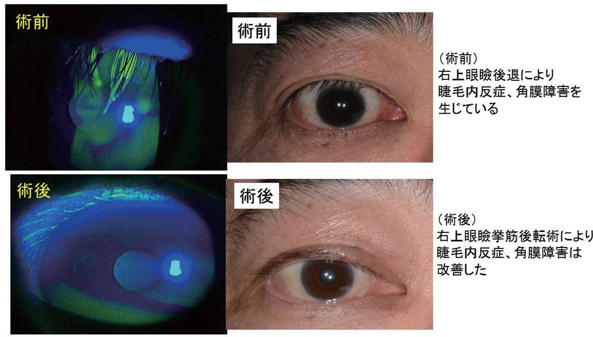
三村真士
甲状腺眼症の症状は、視力障害や複視などの視機能異常による症状と、眼痛、流涙、充血、顔貌の変化などの視機能以外の症状とに分けられます。 視力障害は視神経圧迫や角膜障害により起こりますが、これらは治療時期が遅れると後遺症を残します。
視神経圧迫については、できるだけ早期に副腎皮質ステロイドの点滴や眼窩減圧術を行うことで後遺症が最小限で済みます。角膜障害については、重症になる前に眼窩減圧術および眼瞼手術を行うことで、後遺症を残すことなく治すことができます。複視については、すべての場合において完治することは難しいですが、日常生活の支障ができるだけ少ないように斜視手術による治療を行います（ 〈22〉 参照）。
視機能以外の症状については、眼痛、流涙、充血などの炎症症状は基本的に手術以外の角膜保護剤の点眼や副腎皮質ステロイドの点滴で治療しますが、眼球突出が原因であった場合には眼窩減圧術を行うことでこのような症状を軽減することができます。一方、顔貌の変化については手術でしか治せません。甲状腺眼症により"きつい"顔貌に変化してしまうことが多いですが、発症前の状態にできるだけ近づけることを目標に眼窩減圧術、斜視手術、眼瞼手術を行います。
田邉真紀人
眼症をお持ちの患者さんの甲状腺の病気のほとんどはバセドウ病で、バセドウ病のホルモンの異常の多くは甲状腺ホルモンの値が高い、すなわち甲状腺機能亢進症と思われます。したがって、ここではバセドウ病 による甲状腺機能亢進症の患者さんの手術に関して述べたいと思います。
初めに、甲状腺機能亢進症の状態での手術はお勧めできません。まずは内科での甲状腺機能亢進症のコントロールを優先させるべきであり、甲状腺ホルモンの値が安定してから手術を受けるのが望ましいです。手術前に甲状腺ホルモンを正常化させる方法としては、通常の甲状腺機能 亢進症と同様にメルカゾール® などの抗甲状腺薬が用いられます。しかし、抗甲状腺薬で甲状腺機能が安定するのには時間がかかる（数週〜数ヶ月）ため手術を急ぐ場合はより効果の早いヨウ化カリウムやステロイド薬が併用される場合があります。
甲状腺機能のコントロールが不十分な状態で手術を受けた場合は、甲状腺クリーゼを発症する危険があります。甲状腺クリーゼとは甲状腺ホルモンの値が高い状態で手術、感染症、ストレス等が誘因となって高体温、高度の頻脈、多汗、意識障害、息切れや動悸、興奮、混迷、昏睡、下痢、嘔吐、黄疸といった症状を呈し生命の危険を生ずるものです。発症率は50万人に1人程度であり決して頻発するものではありませんが、発症した場合は治療を行っても10%の患者さんが亡くなり、また救命できたとしても脳・神経系に重大な後遺症が残ることが少なくありませんので、留意する必要があります。
甲状腺ホルモンの数値が安定しても、その他の甲状腺関連自己抗体（TSHレセプター抗体（TRAb）、甲状腺刺激抗体（TSAb））の数値は依然として高い状態であることがありますが、眼の手術は可能です。これらの数値が高い場合には眼症の再発の可能性が高くなることが知られていますが、手術を誘因として再発が起こるかどうかについては、明確な関連は証明されていないからです。
田邉美香
眼窩減圧術、斜視手術、眼瞼手術が全て必要な場合は、眼窩減圧術を先にするのがよいと思われます。
眼窩減圧術は眼窩容積（眼窩骨に囲まれたスペースの広さ）と眼窩組織（眼窩脂肪、外眼筋など眼窩内におさまるもの）の不均一を改善させる手術であり、それにより、眼球運動障害が変化し、眼位にも少なからず影響が出るからです。図は、眼窩減圧術前後の眼球運動を示したものですが、右の眼球運動障害が改善しているのがわかります。
一方、眼窩減圧術で眼窩内壁の削骨を行った場合は、約30％ で内斜視を生じるため、術前後の眼位に変化が生じます。以上のような理由で、眼窩減圧術の後に斜視手術を計画するのがよいと考えられます。
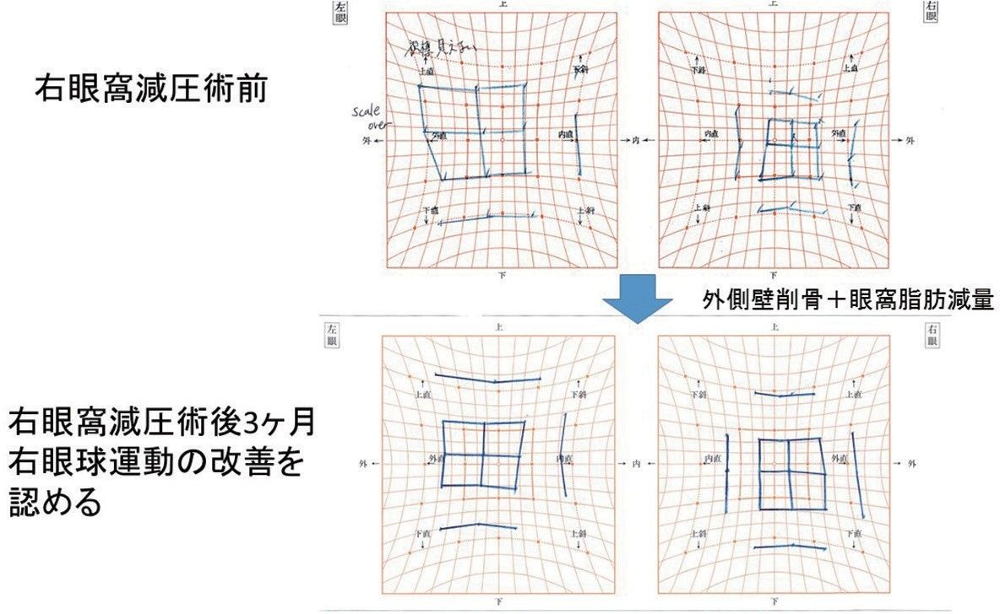
また、眼球突出が改善すると瞼裂幅（上眼瞼と下眼瞼の間の距離）が小さくなるため、眼窩減圧術の後に眼瞼手術を計画するのがよいでしょう。
斜視手術と眼瞼手術に関しては、20度以上の上下斜視を有する場合は、それによって瞼裂幅が変化している可能性があるため、斜視手術を先行するのがよいと思われます。
鹿嶋友敬
眼窩減圧術は甲状腺眼症によって眼窩脂肪や外眼筋などが増えたり大きくなったりすることで、眼球が前に押されている状態を治す手術です。眼球を元の位置に戻すためには、眼球よりも後方にあるものを切除する必要があります。筋肉を切除すると眼球が動かなくなってしまうため、それ以外の組織をターゲットにします。つまり眼窩脂肪と眼窩を構成する骨がこれに当たります。
眼窩を構成する骨は大まかに、上壁、下壁と内壁、外壁に分けられます。また、眼窩脂肪は外眼筋（目を動かす筋肉）の内側と外側の脂肪に存在します。これらの切除で減圧の効果を出すことができます。切除する部位ごとに術後に発生する複視や、術後の内出血、創部腫脹などの合併症の特徴が異なります。下記にまとめましたので、ご参考にしてください。眼窩脂肪切除の利点は切除した脂肪の量を計測することができることです。これによりミリ単位で眼球陥凹効果を予測することができます。
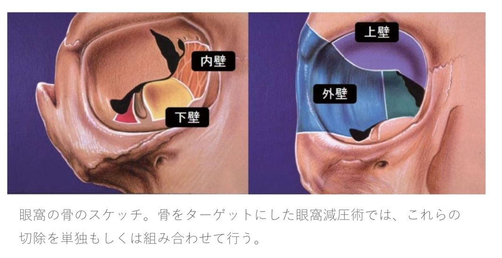
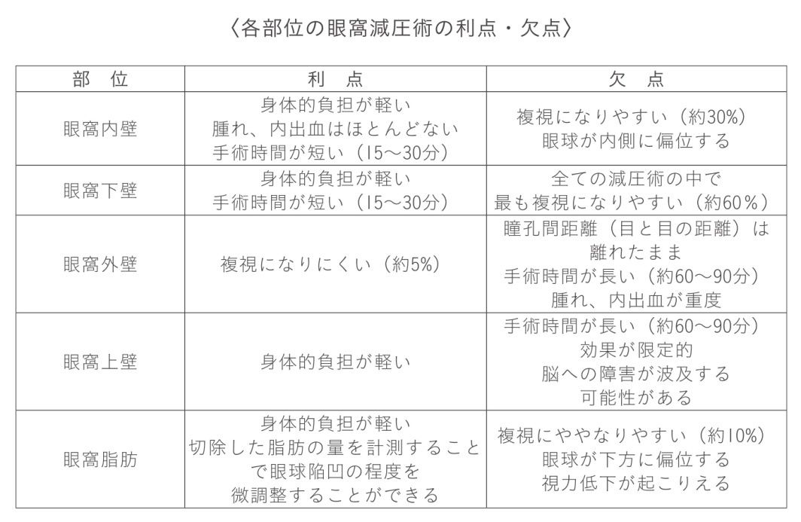
鹿嶋友敬
前項でも書きましたが、切除する組織や部位によって効果や合併症が異なります。それぞれの部位で数ミリの眼球を凹ませる効果を得ることができますので、目標とする眼球の位置まで一つ一つ追加手術を行うこともできますし、内壁と外壁、内壁と下壁など2部位以上を組み合わせて手術を行うこともできます。しかし、陥凹して顔貌がどの程度変化するのかはやってみないとわからないため、重度の眼球突出の場合を除き、1部位ごとに徐々に行っていくことをお勧めいたします。
それぞれの手術の間隔は3〜6ヶ月程度空けましょう。一度手術を行った部位は瘢痕によって手術がとても難しくなります。このため同じ部位を何度も手術することはお勧めできません。減圧手術後に良い状態になったとしても、人生において15%の症例で甲状腺眼症が再発するとされています。その場合にも追加で減圧術を行うことができますが、先述のとおり以前手術した部位は再手術を行うことが難しく、瘢痕化していると効果が出るか不明であるため、他の部位の手術を選択し追加することになります。
鹿嶋友敬
眼窩減圧は眼科の手術の中でも大きな手術です。骨や脂肪に操作が及ぶため、侵襲はとても大きくなります。手術は「管理された侵襲」でありますが、身体にとっては「ただのケガ」と同じですから、ケガが治るような過程を辿ります。まさに目のまわりを「骨折」したような心構えでいると良いと思います。
手術当日と翌日に出血や腫れ、痛みのピークがあり、そこから徐々に回復していきます。手術後は翌日からシャワー浴・洗顔が可能ですので、翌日から創部の血液成分を優しく洗い落とすようにしてください。体温が上がると創部の腫れが悪化するため、術後3日間の入浴は控えていただいています。創部の腫れは2〜3週間で8割が改善しますが、完全に消退するまでに約3〜6ヶ月かかります。内出血は当初赤黒いアザとなっていますが、徐々に移動しつつ色が変化して消えるまでに約3〜4週間かかります。
皮膚を切開した場合には創部の赤みの消退には約6〜12ヶ月かかります。術後に発生した複視（ダブって見えること）についても同様で、 眼窩の組織が安定するまでに3〜6ヶ月かかるため、複視の改善にもそれくらいの時間が必要になります。皮膚の感覚障害も出現することがありますが、これも改善に半年程度かかりますし、そのまま残ってしまうこともあります。
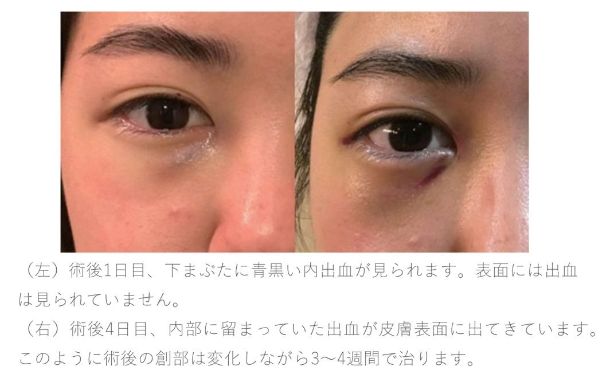
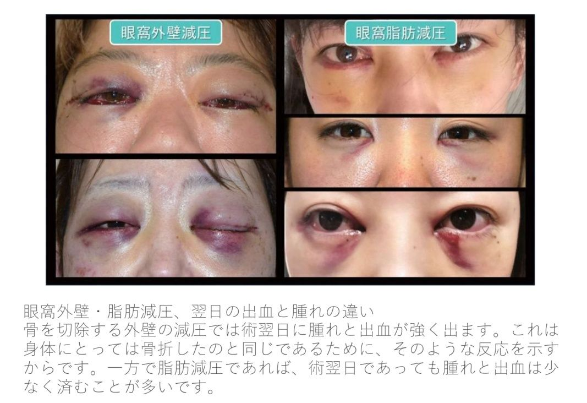
後関利明
斜視とは、目の位置がずれ、両眼でものが捉えられなくなる状態をいいます。多くの方は斜視になると複視（ものが2つに見える）を自覚します。横方向のずれは、輻湊 （寄り目）、開散 （離し目）ができるため多少のずれは調整が可能ですが、縦方向のずれは１mmでもずれれば複視となります。そのため、見た目には全くわからない斜視もあります。症状が進行するとずれが顕著になり整容的にも目立ってきます。
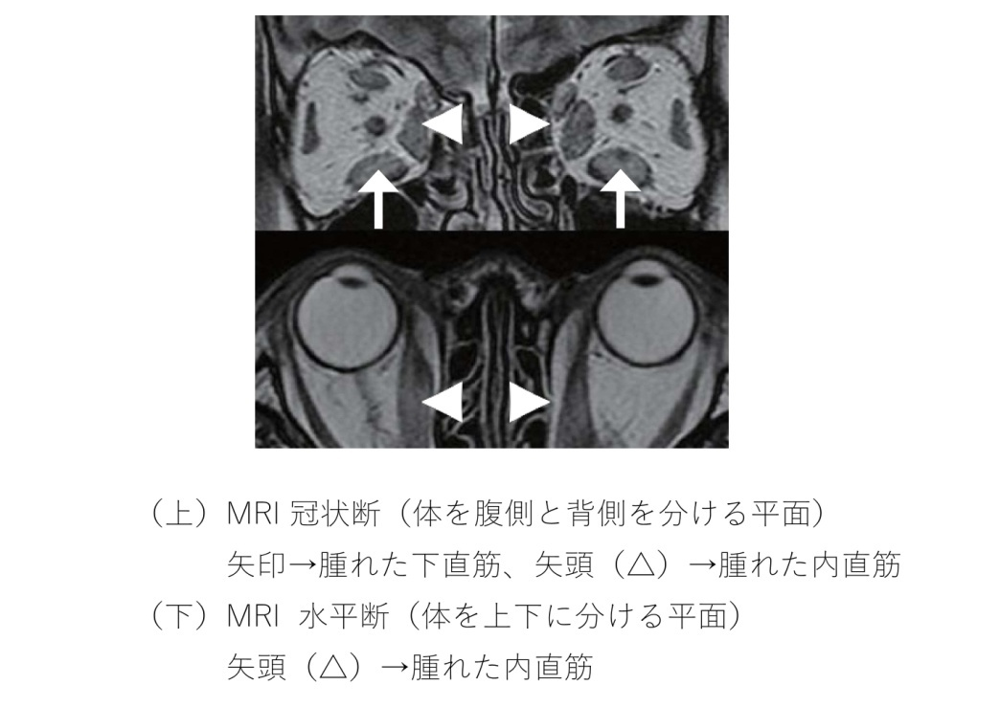
斜視というと子供の疾患と思われる方も多いですが、成人になってから発症する斜視もあります。その代表的な疾患の一つが甲状腺眼症です。前述の通り、甲状腺眼症は眼窩の組織が腫れる病気ですが、外眼筋（目の周りの筋肉）が腫れることで眼球の動きが悪くなり複視を来します。甲状腺眼症では、下直筋が腫れ眼球が上下にずれる上下斜視、内直筋が腫れ眼球が内側にずれる内斜視を多く認めます。逆に外斜視はまれです。
腫れ始めた時期には斜視手術は不向きですので、初めに外眼筋の腫れを副腎皮質ホルモンや放射線療法で取り除きます。早期に治療を行えば斜視が改善することがあります。治療後に斜視が残存するときに、斜視手術を行いますが、3〜6ヶ月間ステロイドなどの治療を行い、眼球のずれ量が安定しMRIにて外眼筋の腫れに勢いがないことが確認できたときに斜視手術を施行します。
後関利明
斜視手術とは、外眼筋（目の周りの筋肉）を移動することで目の位置を調整する手術です。外眼筋の力を弱める手術を弱化術といい、力を強める手術を強化術といいます。全ての斜視手術で結膜（白目）を切って、外眼筋を露出させます。弱化術は外眼筋を強膜から切り離し、外眼筋を強膜の接点より後ろの強膜に縫い付ける、「後転術」が一般的です。強 化術は外眼筋を強膜から切り離し短くし、前方に移動して外眼筋と強膜の接点に縫い付ける、「短縮前転術」が一般的です。
手術は局所麻酔で可能ですが、筋肉の拘縮（伸び縮みができなくなり固くなった状態）が強い場合は痛みを伴うため、全身麻酔を選択することもあります。手術後1 〜2日は血が混じった涙がでます。手術後2 〜3日は洗顔洗髪に制限がでます。また、激しい運動や重い物を持つのもこの時期は避けましょう。手術後1〜2週間は、髪の毛が目に入ったような異物感や目を動かすことで生じる痛みがあります。手術後1週間を過ぎるとほとんど制限なく生活できますが、プールや海水浴は水が汚染されていますので3週間避けましょう。手術後1〜2ヶ月は切開した結膜の充血が続きます。
斜視手術の合併症として、失明に繋がるような病気（眼内炎、網膜剥離など）も報告がありますが非常にまれです。一番の合併症は、術後の眼位が定まらないことです。過矯正や低矯正、さらに術後3ヶ月程度は眼位の変動を伴います。術後の眼位が安定しても斜視が残る場合は再手術を計画します。
斜視手術のゴールは正面での複視をなくすことです。残念ながらどんなに斜視手術が成功しても、眼球運動の制限が強い場合は、横方向や上下方向を見たときに複視が残存します。そのためにも、大きな複視を来さないうちの早期治療が重要となります。
三村真士
甲状腺眼症では、眼の奥の脂肪や筋肉と同様に、瞼の周りの脂肪や瞼を開けるために引っ張っている筋肉（眼瞼挙筋）が腫れてしまいます。眼瞼挙筋が腫れると、筋肉がつっぱってしまって目が開きすぎてしまい（眼瞼後退）、甲状腺眼症特有の顔貌である"ギョロ目"に繋がります。さらに重症の場合は目が閉まらなくなり（兎眼）、ときに角膜を障害して視力低下につながることもあります。一方、下まぶたも甲状腺眼症により影響を受けます。眼球突出により下まぶたが下に押し下げられたり、炎症により下まぶたが下後方向に引き込まれて引き伸ばされたりしてしまう場合があり、これもギョロ目や兎眼の原因になっている場合があります。
眼瞼手術では、これらの異常な変化をできるだけ発症前に近づけるために手術を行います。上下まぶたともに、通常は局所麻酔で手術を行います。上まぶたでは、二重のくぼみで皮膚を切開し、奥にある眼瞼挙筋をすこしずつ元の位置から後ろの方に移動させていき、引っ張る力を調整します。手術の途中に何度か目を開けていただき、丁度いいところまで瞼を下げることができたら、二重の形を調整して皮膚を縫合して終了します。下まぶたでは、引き伸ばされた組織の張りを回復し形を整えるために、目尻の奥にある靭帯を短くして調整します。場合によっては、上下眼瞼の奥にある脂肪を切除、皮膚も伸びてしまっている場合はそれも一部切除して調整し、できるだけ元の形に近づけます。
これらの瞼の変化は、前述の眼窩減圧術、斜視手術に影響を受けるため、これらの手術が終わり、状態が安定した3ヶ月後を目処に行います。
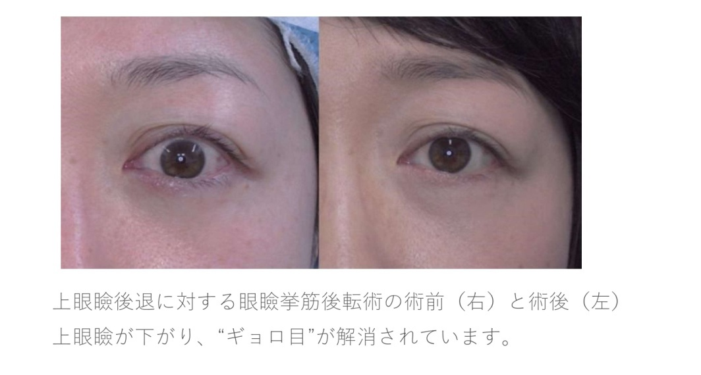
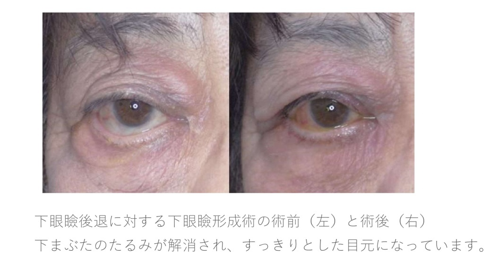
三村真士
眼瞼手術後の痛みはあっても1日程度で、ほとんどの場合大きな問題となりません。手術後は創部をできるだけ保冷剤などを使用して冷却し、痛みや炎症を軽減させます。通常、手術当日は首から下のシャワーのみ、手術翌日からは全身シャワー浴が可能となります。洗顔後は抗生剤入りの眼軟膏を創部に塗布してもらいます。縫合糸は、必要に応じて手術後1 〜2週間で抜糸します。手術の程度によりますが、この時点で術後炎症の7割から9割が引きます。術後の皮下出血（青タン、赤タン）も程度によりますが、同様に自然に吸収されていきます。見た目はきれいになっていても、傷の奥では最大で術後半年間、傷を治そうと細胞が働いていますので、それまでは経過観察が必要となります。
術後合併症として感染および血腫形成（創の奥に血の塊ができること）が考えられますが、眼瞼は血流が豊富であるため、感染が問題になることは非常にまれです。血腫形成に関してもほとんど起こりませんが、さまざまな理由で血が止まりにくい方は注意が必要です。もし大きな血腫ができてしまった場合は、取り除く手術が必要となることがあります。
眼瞼手術でも、低矯正や過矯正が起こりえます。その場合は追加手術で微調整を行うこともありますが、最終目標は個人で異なりますので、主治医とよく相談して治療方針を決めることをお勧めします。
田邉美香
上眼瞼挙筋腫大によって上眼瞼後退、眼瞼遅滞、眼瞼腫脹が生じます。それに対し、消炎目的にステロイド局所注射という治療があります。ステロイド局所注射については、上眼瞼を翻転して結膜（眼瞼の裏）から注射する方法や、皮膚側から注射する方法が報告されています。注射後1〜2日は注射によってさらに腫れたように感じますが、徐々に効果が出てきます。ステロイド製剤によっては粒子が白く残ることがあります。
眼瞼腫脹は85%の症例で、眼瞼後退は55%程度の症例で改善することが報告されています。副作用として眼圧上昇がありますので、注射後は眼科で眼圧をフォローしてもらう必要があります。
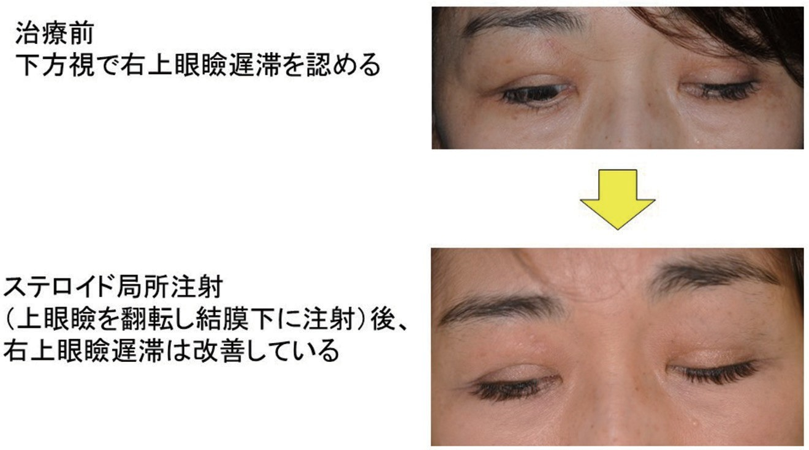
また、近年、斜視治療に用いられるA型ボツリヌス毒素注射が甲状腺眼症にも用いられるようになりました。例えば、内直筋腫大によって外転（眼球が外を向く動き）障害が生じている症例に対しては内直筋にボツリヌス毒素を注射し、内転（眼球が内を向く動き）が減弱することによって外転障害、複視が改善するという機序です。注射の効果は3〜4ヶ月で消失するため再投与しなければならないデメリットがありますが、斜視角が安定しない患者さんや手術を望まない患者さんにはメリットもあります。
後関利明
甲状腺眼症に伴うほとんど全ての手術は、健康保険の適用範囲内で行うことができます。健康保険を利用することで、自己負担分が3割で治療を受けることができます。なお、高齢者（70歳以上）や小児は、地域や収入によって負担分が変わります。さらに障害をお持ちだと負担額が減ることがあります。また、個人ではなく家族単位になりますが、ひと月に支払う医療費が高額になれば、お支払いした額、収入、年齢に応じて一定額以上の払い戻しが可能な高額医療費支給制度があります。詳しくは、保険者、または市町村の担当窓口までお問い合わせください。
甲状腺眼症に伴う代表的な手術費用は片眼3割負担で、眼窩減圧術135,690円、斜視手術12,600 〜57,990円、眼瞼手術4,980〜21,600円です。ご負担分は術式によって変わります。ご自分の術式、ご負担額は担当の先生や病院スタッフにお尋ねください。
さらに医療保険にご加入いただいている方は、医療保険によって給付金が受けられる可能性がありますが、それぞれの契約の内容によるため、事前に保険会社の担当者にお尋ねいただくのがよろしいと思います。
三村真士
まずは現時点で手術適応があるかを判定する必要があります。前述の ように、ご自身の甲状腺眼症がランドルズカーブ（ 〈2〉 参照）の非活動期に入っているかどうかを確認し、入っていれば手術が勧められる時期になります。もしくは視神経圧迫などにより視力・視野が脅かされている場合には、速やかに点滴治療や手術を行うべきであると思われます。
次に、甲状腺眼症による症状がどれくらいあって、それがどれくらい手術で治せるかを理解すべきです。視機能の障害はよく重視されますが、顔貌の変化による辛さはご本人しかわからないため、蔑 ろにされがちです。甲状腺眼症の約半分の患者さんがその顔貌の変化に悩み、約2割の患者さんがうつ病を発症すると言われています。その上で、手術により得ることができる利益と、手術の危険性を天秤にかけて、手術をするか決めましょう。
以前は手術の危険性が手術により得られる利益を上回る場合もあり、手術を勧められることが少なかったと思われますが、近年の医療の発展により、利益が危険性を上回る場合が多くなってきました。海外では古くは100年以上前から眼窩減圧術を行っていますが、最近10年で手術は非常に低侵襲になってきています。
どのくらい症状があり、どのくらいその症状が手術で治せる可能性があり、さらにどのくらい手術の危険性があるかを、甲状腺眼症の手術を行っている施設でよく相談することをお勧めします。
河村真美
非活動期に入り、残った眼症状に対しては手術以外の治療法はありません。
急性期の治療の目的は、炎症を重症化させない治療を行うことで、後に残る眼球突出などの顔貌や形態変化、眼瞼後退や複視などの機能障害を少しでも軽減させることです。発症前の状態に戻すものではありません。
甲状腺眼症は発症から半年程度経過すると活動性のピークを過ぎ、1〜2年で非活動期に入り固定化します。肥大した筋肉や増えた眼窩脂肪は元には戻らないため、形態変化や機能障害には手術が必要となります。
田邉美香
再発する可能性はあります。炎症が再燃、再発した場合の対処法としてはプレドニゾロンの増量、ステロイドミニパルス療法の追加、週1回パルス療法の追加などを考慮します。
通常、プレドニゾロン漸減療法中の再発が多く、大部分は発症後10年以内に再発し、その頻度は15%程度とされています。再発した患者さんは、初発時平均年齢42歳であったと報告があり、ご高齢の患者さんでは再発しにくい可能性があります。また、喫煙者に有意に再発が多いので、禁煙は厳守しましょう。
再発後、ステロイド療法などで消炎ができれば、基本的に再手術は可能ですが、一度手術した箇所は瘢痕によって手術が難しくなります。このため、同じ部位を何度も手術することはお勧めできません。他の部位や異なる術式を検討します。
（要旨のみ。日本語訳）
野口三太朗
甲状腺眼症はバセドウ病で主に認められる甲状腺外症状であるが、重症化はまれである。甲状腺眼症の管理は十分でない場合があるが、これは主に可能な治療法が本疾患の発症機序を標的としていないためである。治療は、甲状腺眼症の活動性及び重症度、並びに本疾患の患者のQoLに対する影響の徹底した評価に基づくべきである。局所治療（人工涙液、軟膏及びサングラス）及び甲状腺眼症進行のリスクファクター（喫煙及び甲状腺機能異常）の管理は、すべての患者に対して推奨される。
軽症の甲状腺眼症では、通常、慎重な経過観察で十分だが、軽症の眼症状を改善し、より重症化するのを予防するために、6ヶ月間のセレン投与が有効である。高用量の糖質コルチコイド薬（GC）の投与（静脈内投与が望ましい）は、中等症から重症の活動性の甲状腺眼症の第一選択治療である。メチルプレドニゾロンの最適な総投与量は4.5〜5gと考えられるが、より重症の場合は高用量（最大8g）を投与することが可能である。GCの静脈内投与の第2コース、GCの経口投与と眼窩放射線療法との併用療法、シクロスポリンの投与、リツキシマブの投与、慎重な経過観察などの第二次選択治療の選択は、患者と一緒に意思決定することを推奨する。甲状腺眼症が保存的に管理されており、免疫抑制療法によって非活動性である場合は、ほとんどの患者で機能回復手術（眼窩減圧術、斜視手術、または眼瞼手術）が必要である。
甲状腺眼症及びその治療がQoL及び心理社会的健康に及ぼす影響を含めた、患者中心の治療を行うことを推奨する。バリデートされた疾患特異的評価尺度であるGOQoLをルーチンな臨床診察に使用することを推奨する。GOQoLは多言語で利用可能である（ www.eugogo.eu ）。
甲状腺眼症の活動性及び重症度は標準化された基準に従って評価し、 表 に示すように、「活動性」または「非活動性」、「軽症の眼症」、「中等症から重症の眼症」または「失明のおそれのある眼症」に分類することを推奨する。
かかりつけ医、一般開業医、一般内科医及び一般眼科医は、甲状腺眼症患者を内分泌専門医や専門眼科医がいる専門機関に紹介すべきである。ただし、甲状腺機能の正常化及び潤滑点眼薬で改善する軽症の眼症は除く。
バセドウ病による甲状腺機能亢進症の患者には、甲状腺眼症の有無に関わらず、禁煙を促し、必要があれば、専門の禁煙プログラムの実施や禁煙外来を受診させることを推奨する。
甲状腺眼症患者の甲状腺機能を速やかに正常化し、安定させ維持することを推奨する。
放射性ヨウ素内服療法を受けている患者で、進行のリスクが高い、または新たに甲状腺眼症を発症した患者には、経口プレドニゾンの予防投与を0.3〜0.5mg/kg/日から開始することを推奨する。リスクの低い患者には、低用量のプレドニゾンを投与することが可能である。甲状腺機能低下症がなく、甲状腺眼症を進行させる他のリスクファクターがなく、禁煙している非活動性の甲状腺眼症患者は、ステロイド薬の予防投与をせずに安全に放射性ヨウ素内服療法を受けることができる。
すべての甲状腺眼症患者に対してオキュラーサーフェス疾患を評価し、甲状腺眼症の経過中は、浸透圧保護の性質を有する防腐剤無添加の人工涙液を常時使用して十分に治療することを推奨する。ただし、角膜露出に対しては、ゲル、または軟膏を特に夜間に塗布し、さらに保護することが必要である。
軽症の甲状腺眼症に対しては、局所治療及び一般的な治療を行い、リスクファクターを管理することを推奨する。甲状腺眼症のQoLへの影響がリスクを上回る場合、または、活動性である場合は免疫抑制療法（活動性の甲状腺眼症）または機能回復手術（非活動性の甲状腺眼症）が妥当と考えられる。
眼の症状及びQoLを改善し、甲状腺眼症がより重症化するのを予防するため、罹患期間が比較的短い軽症の甲状腺眼症患者には6ヶ月間のセレン投与を推奨する。
中等症から重症の活動性の甲状腺眼症の第一選択治療として、高用量のGCの静脈内投与を検討することを推奨する。GCの静脈内投与は、起こり得る重篤な有害事象を安全に管理できる専門の医療機関で行うべきである。
静脈内投与する際のGCの総投与量は8.0g未満とし、ウイルス性肝炎、重大な肝機能障害、高度の心血管系障害、または精神疾患のある甲状腺眼症患者にはGCを静脈内投与すべきではない。糖尿病及び高血圧は十分にコントロールしてから投与を開始すべきである。
中等症から重症の活動性の甲状腺眼症患者の大部分には、中用量のメチルプレドニゾロンの投与を推奨する。すなわち、メチルプレドニゾロン0.5g週1回投与を6週間行い、引き続き0.25g週1回投与を6週間行う（総投与量4.5g）。メチルプレドニゾロンの高用量投与［0.75g週1回投与を6週間行い、引き続き0.5g週1回投与を6週間行う（総投与量7.5g）］は、中等症から重症の眼症のうちの最重症例のために残しておくべきである。
臨床医は、GCの投与を受けている各患者に対し、治療効果と副作用について観察すべきである。副作用がベネフィットを上回る場合は、臨床医はGCの投与中止を検討し、別の治療法を選択する、あるいは慎重に経過観察を行うべきである。
中等症から重症の活動性の甲状腺眼症患者の第二選択治療を選択する適切な方法として、患者と一緒に意思決定することを推奨する。
甲状腺眼症が視覚機能、またはQoLに重大な影響を及ぼしている場合は、非活動性が6ヶ月以上経過した後に、待機的機能回復手術を患者に行うことを推奨する。複数の手術が必要な場合は、眼窩減圧術は斜視手術、眼瞼手術に先立って行うべきである。各患者の固有のニーズに応じた手術が可能な専門医のいる専門機関に患者を紹介すべきである。
高度の角膜露出は、角膜障害への進行を避けるために、できるだけ速やかに薬物療法、または段階的により侵襲的な外科手術による治療を行うことを推奨する。角膜障害に対しては速やかに手術を行うべきである。
DONに対しては、速やかに極めて高用量のGC静脈内投与（メチルプレドニゾロン500〜1000mgを3日間連続投与、または隔日で1週間投与）を行い、2週間以内に効果がみられなかった場合、または効果が乏しい場合は、緊急に眼窩減圧術を行う。発症早期の脈絡膜皺襞及び眼球亜脱臼については、できるだけ速やかに眼窩減圧術を行うべきである。DONが2週間後に回復、または改善した場合は、中等症から重症の活動性の甲状腺眼症の管理で述べたように、メチルプレドニゾロン週1回静脈内投与によるパルス療法を継続すべきである。
〈参考文献〉
１）Patel Petal. Recurrent Thyroid Eye Disease. Ophthalmic Plast Reconstr Surg.: 445-448, 2015
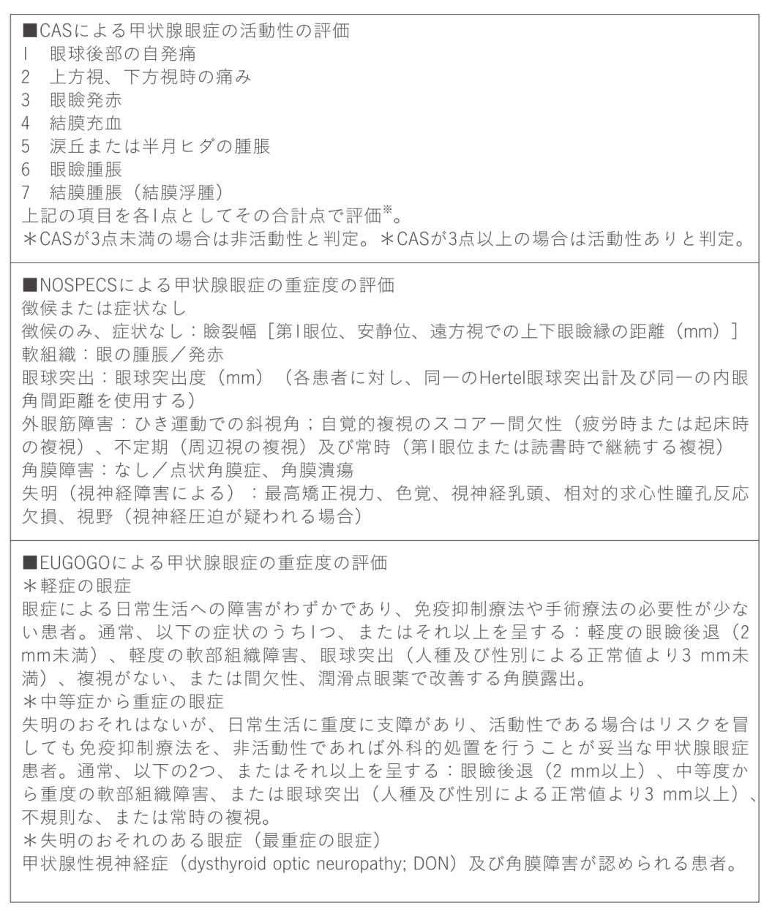
1時間でわかる甲状腺眼症入門パンフレット
2018年10月1日 初版発行
2018年12月15日 kindle版発行
著者・編集：
鹿嶋 友敬
河村 真美
相川 美和
野口 三太朗
若月 優
三村 真士
田邉 美香
田邉 真紀人
後関 利明
発行人： 鹿嶋 友敬
発行所： オキュロフェイシャルクリニック東京
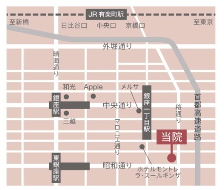
オキュロフェイシャルクリニック東京
〒 104-0061 東京都中央区銀座1-15-4銀座1丁目ビル8階
院長 鹿嶋 友敬
診療時間 8:15〜17:15
休診日 水曜・日曜・祝日
Mail tokyo@oculofacial.clinic
URL www.oc-tokyo.com
Tel 03-5579-9995
Fax 03-5579-9993
※完全予約制のクリニックとなります。
ご予約についてはお電話にて承ります。
眼科・形成外科・美容外科
------------------------------------------------
＜ 対象疾患＞
バセドウ病の眼球突出／涙道閉塞／眼瞼下垂・内反／眼瞼悪性腫瘍・眼窩腫瘍／下眼瞼脂肪ヘルニア（目のくま）／顔のたるみ
＜ 手術名＞
眼窩減圧術／DCR・涙道内視鏡／拳筋短縮・前頭筋つり上げ術／眼瞼悪性腫瘍切除・再建／骨切含む眼窩腫瘍摘出術／経結膜脂肪切除・脂肪移動術／ボトックス注射・ヒアルロン酸などの美容注射